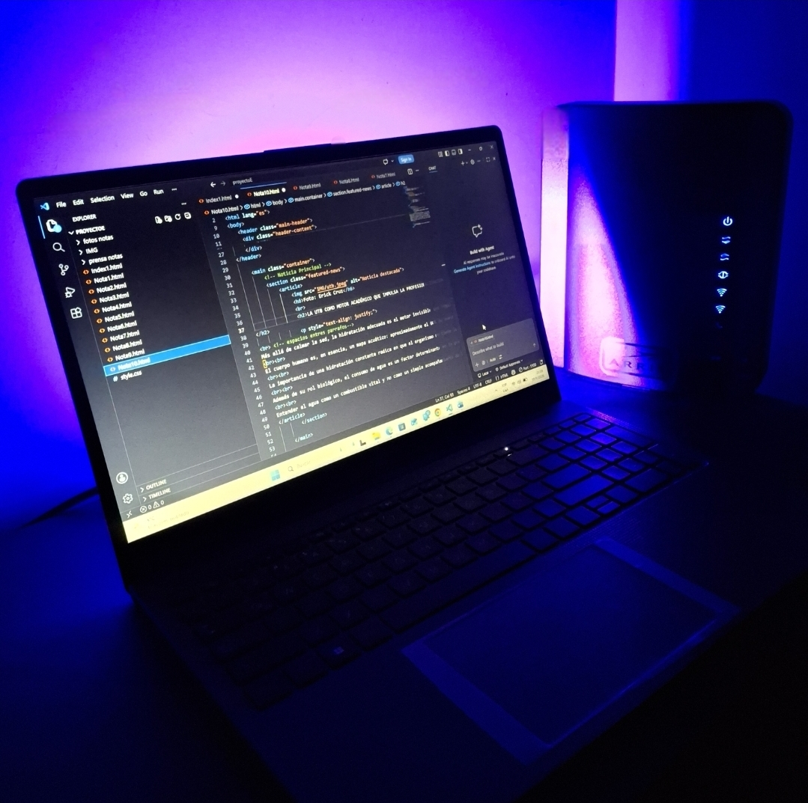

Foto: Erick Cruz
BOLIVIA SE CONECTA AL FUTURO
Entre el talento joven y la exportación de software, el país se posiciona como un actor estratégico en la economía digital de la región.
Históricamente reconocida por sus riquezas naturales, Bolivia atraviesa hoy una transformación silenciosa pero profunda, la consolidación de su industria tecnológica. Lo que comenzó con esfuerzos aislados de programadores y emprendedores, se ha convertido en un ecosistema robusto que hoy exporta soluciones digitales a los cinco continentes, demostrando que el principal recurso del país en el siglo XXI no está bajo el suelo, sino en el ingenio de su gente.
El eje troncal conformado por Santa Cruz, Cochabamba y La Paz, se ha establecido como el motor de esta revolución. Cochabamba, apodada por muchos como la capital del software, alberga a miles de desarrolladores que trabajan para gigantes globales, mientras que Santa Cruz se destaca por un vibrante ecosistema de empresas emergentes que buscan digitalizar desde la banca hasta la logística. La Paz, por su parte, lidera la integración de tecnología con el sector público y la educación superior, creando un puente necesario entre la academia y la industria.
Sin embargo, el camino no está exento de desafíos. La brecha digital en las áreas rurales y la necesidad de una infraestructura de conectividad más competitiva siguen siendo tareas pendientes. A pesar de esto, la resiliencia del sector es notable. Las comunidades de desarrolladores, los centros de innovación y las aceleradoras locales están logrando que el hecho en Bolivia, sea sinónimo de código de alta calidad, compitiendo de tú a tú en mercados exigentes como los de Estados Unidos y Europa.
La tecnología en Bolivia ya no es una promesa a futuro, sino una realidad palpable que sostiene la economía de miles de familias. El éxito de este sector dependerá de la capacidad de articular políticas públicas con la inversión privada, asegurando que el talento boliviano no tenga que emigrar para brillar. En este escenario, el país tiene la oportunidad histórica de dejar de ser un simple consumidor de tecnología para consolidarse como un creador de soluciones globales desde el corazón de Sudamérica.